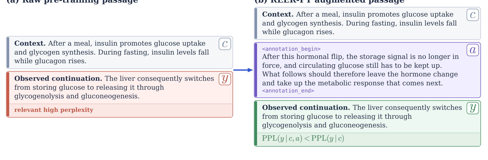
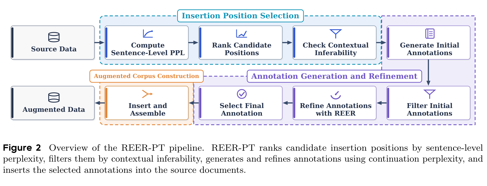
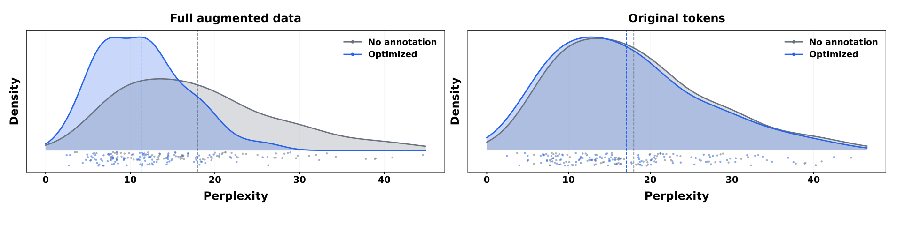
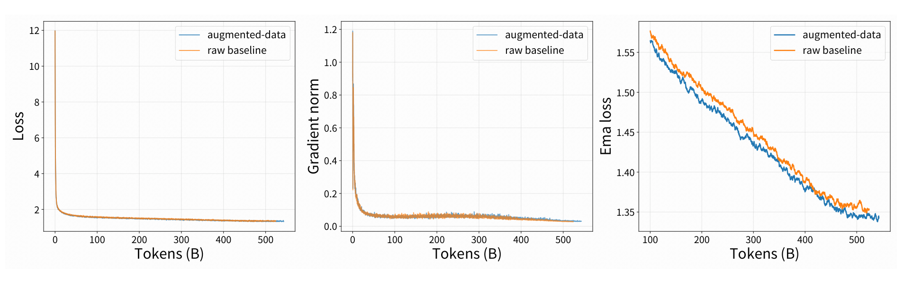

大语言模型靠海量文本的next-token预测获得能力，但传统预训练只教「后面跟什么」、几乎不解释「为什么这样续写」：连接上下文与续写的推理是隐式缺位的。REER-PT正是给这段缺失补上显式衔接。
本文为论文解读编译（arXiv:2608.30627，北京大学 × ByteDance Seed），4张原图全保留。
大语言模型的能力主要来自海量文本上的next-token预测。但随着算力提升，高质量训练数据正成为越来越重要的瓶颈。传统预训练只教会「文本后面跟什么」、几乎不解释「为什么会这样续写」：那层连接上下文与续写的中间推理，是隐式缺位的。
有人尝试用思维链（CoT）数据补足推理信号，但多数来自人工整理的问答对，规模和领域覆盖有限。预训练语料本身横跨各种主题、文风与篇章。若能直接从语料合成推理注释，就能以可扩展方式为无数领域补充推理信号，无需为每个领域单独设计任务。
现有「推理感知预训练」研究有两个难点：稠密或在线推理生成在语料规模下代价高昂；流畅的模型生成注释未必有用：可能冗余、与上下文关联弱、或与实际困难点无关。同时高损失token不总是推理机会（有些引入任意名字/日期/标识符/外部事实）。因此有效增强既要判断「哪里需要推理」，也要判断「注释能否让续写更好预测」。
REER-PT（Reverse-Engineered Reasoning for Pre-Training）把反向工程推理从「问答响应」扩展到「文档续写」。核心思想：对预训练原始文档，找出难预测、但仍能从上下文推断的续写位置，插入一条简洁读书笔记风格推理注释，重建上下文到续写间缺失的衔接。注释不透漏目标内容，但能让高困惑度续写变得更好预测。

过程离线完成，源文本完全保留，增强语料仍可直接用标准next-token预测训练，无需在线推理rollout。
把文档切分为句子，用句子级困惑度给候选位置排序，困惑度越高过渡越难预测。但高困惑度不保证续写能从上下文推断（有些引入任意名字/标识符/外部事实）。因此注释模型做「上下文可推断性检查」，过滤无法由上下文支撑的位置。最终留下的位置既难预测、又在上下文上可推断。

对每个选中位置，注释模型先生成多条读书笔记风格初始注释（第三人称/无人称，摘要上下文、点明缺失衔接、说明续写为何顺理成章，不措辞复述续写）。精修前先过滤超长（正常每条约500-1000词）或存在目标泄漏的注释：目标泄漏指注释直接复述续写里的词/事实，会通过「提前剧透」而非「讲清衔接」降低困惑度，是无效的。
随后按REER原则，以观察续写的困惑度作为优化信号：若注释抓住上下文到续写的有用依赖，以它为条件应能降低续写困惑度。作者把注释切多段、逐段改写候选取续写困惑度最低者；最终选中整体困惑度最低的注释。若比「无注释基线」还高，就丢弃该位置。
每条被接受注释用边界标记 <annotation_begin>/<annotation_end> 括起，插在目标续写之前。所有源token原样不动、顺序不变，增强语料在预训练前一次性固定。
作者用困惑度模型提供逐token概率来选位、评估注释；注释模型负责可推断性检查和生成改写。可用目标模型自身做困惑度模型（on-policy），也可用独立困惑度模型（off-policy）。对1000 token文档约选K=⌊T/1000⌋ 个插入位置。
困惑度分析：全局与局部每一次对比都带来正面困惑度下降。全局上，优化注释使完整增强数据困惑度相对无注释降低7.285、原始token降低1.031；与初始注释比，精修再降0.488（完整）和0.422（原始）。局部上，优化注释使被选续写困惑度相对无注释降4.235、相对初始降1.385。综合困惑度下降区间0.42到7.29。

文本内部13-gram自重复率与注释到源文档精确重合率都很低：注释自重复率均值0.203%（源文档0.615%），注释与源文本精确13-gram重合率仅0.051%：几乎无逐字抄写。
作者用23B-token源语料 + 500B通用语料组成原始混合；REER-PT把源语料替换为42B-token增强版。从零各训练一个680M参数模型（相同架构/tokenizer/优化器），分别作raw baseline与augmented-data模型。

训练动态：两模型梯度范数轨迹相似，但增强数据模型训练后期普遍达到更低训练损失（见训练动态对比图）。
基准成绩：知识、通用推理、STEM类目正面提升。BBH与GPQA-Diamond各提升+2.07、MATH +1.50、OlympiadBench +1.49、DROP +1.40、MMLU-Pro +0.90，其余C-Eval/SuperGPQA/Chinese SimpleQA/ZebraLogic等小幅 +0.36~0.60。
代码类目回落：三代码基准全降：MBPP+ −2.65、HumanEval+ −1.83、LiveCodeBench −1.79。向代码文档插自然语言注释打乱局部程序结构，促使模型把解释文本与可执行代码混在一起，在要求简洁严谨代码的基准失分，为未来专用推理注释格式留出空间。
实验仅用680M模型与单一预训练配方，更大规模行为未知；数据构建依赖困惑度/注释模型选择；读书笔记式格式针对自然语言文档，在代码中破坏结构。未来工作：更大规模训练、注释密度、不同PPL/注释模型组合，开发面向代码等结构的感知注释格式。
REER-PT用「困惑度引导 + 反向工程推理」给预训练数据稀疏地注入简洁推理注释：不改标准训练目标、不采在线滚动，就能在知识/推理基准带来最高2.07个百分点提升，同时几乎不引入重复或抄袭。短板是代码类任务回落：自然语言注释会打乱程序结构。
参考：https://arxiv.org/pdf/2608.30627